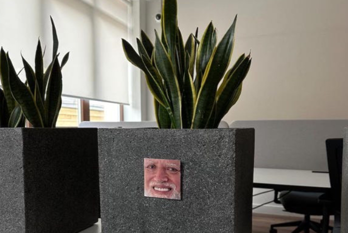

обо мне
введение
Привет! Это мой гигапост, рассказывающий кто я вообще такой и почему пишу про тестирование, it и tech в целом. Здесь будут описаны в неких подробностях мои шесть лет опыта в it и еще много лет до него, которые способствовали тому, что он появился.
Мне нравится писать, мне нравится что-то рассказывать людям. Я часто сталкиваюсь с тем, что многие ведут блоги, при этом, толком не рассказывая о себе. Называясь синьорами, без доказательства опыта и с весьма сомнительными тезисами и каждый раз приходится прикладывать некие усилия, чтобы разобраться, кто есть кто. Сколько людей – столько и мнений, конечно. Но я бы так не хотел.
И поэтому считаю важным рассказать этим текстом по-честному, как я нарабатывал свой опыт и через что прошел. А имеет ли это для вас авторитет – вы уже решите сами.
Если супер коротко: всегда любил компуктеры и технологии; учился на гуманитарной специальности, но всегда поддерживал свой интерес; писал курсовые и диплом на it темы, просто потому что это интереснее, чем остальное; благодаря этому попал в Администрацию города Екатеринбурга в it-комитет; получил первый хоть сколько-то релевантный опыт и устроился куа в свою первую компанию; познал айти, а дальше просто работал, чтобы оказаться там, где я сейчас.
Дальше для тех, кто не брезгует большим количеством текста.
что-то типа школьных лет
С самого детства я замечал, что у меня есть некий интерес к тому, чтобы разобрать какую-то вещь, игрушку и понять, как оно работает, что-то сломать. Поэтому я всегда мечтал найти профессию, где можно было бы применить эти стремления и такой профессией оказалось тестирование. Конечно же это полный пиздеж.
В детстве я хотел стать космонавтом или профессиональным футболистом, какой нахуй тестировщик. Иронизирую я потому что реально встречал таких людей и даже какой-то доклад смотрел, который начинался с этих слов.
примерно так я смотрел на начало того доклада
Как уже говорил выше, всегда любил компуктеры и технику. Не знаю, откуда это пошло, наверно от папы, который постоянно то в dendy какую-нибудь порубится, то музыку включит на своем советском пленочном проигрывателе и огромных советских колонках, то просто паяет очередную безделушку. И вот благодаря этому повышенному интересу папы к таким вещам, у нас всегда была разнообразная техника и достаточно рано появился первый компуктер.
Первым делом я хотел просто смотреть и тыкать, потому что интересно, конечно же. Потом я хотел играть, а это уже определенный квест. При чем, до появления хорошего интернета это было еще попроще, потому что просто покупался диск в соседнем киоске, да и то не мной, а папой или старшим братом. А вот когда зашел первый провайдер с локальной сетью, вот тогда и начались первые задачки.
Локальная сеть тогда, кажется, не выходила даже за пределы района (но это не точно). И чтобы пользоваться всеми ее благами, а именно скачивать что-либо, нужно было пошерить около 20 гигабайт данных, которые могли бы скачать у тебя (наверно, тогда я первый раз узнал, что такое гигабайт). Взаимный обмен. Что только люди не шерили: свои фотографии, фильмы, музыку и, главное, игры. Так я получал первый опыт работы с данными, которые нужно пошерить/скачать.
Скачать и установить игру вообще квест: «Скачай это тут, там другое, запустишь установочник, подмени три файла тут, тут и вот тут и не факт, что все запустится, а если не запустится, то я хз». Или «нарезать» игру на диск через какой-нибудь nero burning rom...
Уже чуть старше и осознанней, с появлением соцсетей, начал просто тусить в интернете и смотреть, кто, что и как делает. Примерно в то же время вырос из игр. Играть, конечно, не перестал, но в какой-то момент просто стал интересовать, а что там дальше? Просто банальный живой интерес, в стиле: «Че-то все про какой-то VS Code говорят, а что это такое, надо скачать». Скачал, установил, получил ровно ноль полезной инфы, потому что «а че тут делать то не понятно», но интерес поддержал. А там еще в школе на qbasic рисовали всякое.
В общем, было прикольно и любопытно. Примерно так все школьные годы и прошли, вперемешку с футболом.
почти стал чиновником
Однако, поступил я за каким-то хуем на Государственное и муниципальное управление. Наверно потому что я был просто чилловым челиком, который че-то особо и не думал, чего хочет. Играл в футбол, компуктер, гулял с друзьями, какое будущее, такой кайф сейчас. Ну вот и, несмотря на весь интерес к технологиям, особо не задумываясь, поступил на простую специальность, которая дает работу и будущее, ух. Да еще и друг там уже учился.
Вообще, считаю, что высшее образование, каким бы оно ни было, дает хорошую базу в жизни, в принципе. Заставляет долго и упорно заниматься всякими вещами, которые тебя страшно выбешивают в моменте, но которые дадут определенный результат на дистанции. Учишься самостоятельности, учишься сам отвечать за свой результат, в тебе зарождаются первые ростки какой-то осознанности, планирования. А если еще и работаешь параллельно, потому что денюжки нужны, чтобы погудеть, то ващееее. Я вот и официантом успел побегать почти все 4 года, достаточно весело было, хотя хз, как не умер в один момент.
Наверно, всему этому можно научиться и в другом месте, если ты в 17 лет уже обладаешь определенным уровнем осознанности, но получилось так, как получилось. Не жалею.
Учился в целом средне. Особого трепета к профессии и учебе не имел. Но прокачивая ответственность, планирование и имея определенную планку требований к себе – учился просто норм, чтобы не стыдно.
Курсовые и диплом старался писать на около айти, ну чтобы было интереснее. Уж названия курсовых не вспомню, но диплом, фюф: «Современные информационные технологии в деятельности органов муниципальной власти». Хотел написать, собственно, какими благами технологий пользуются органы муниципальной власти, чтобы упростить свою работу и нашу жизнь. В целом, шалость удалась. Преддипломную практику нужно было проходить в профильном департаменте/комитете, но меня активно пытались засунуть, куда получится, чтобы просто не возиться со мной. Но я настоял на том, чтобы оказаться где-то в айти комитете. Так, в общем-то, и случилось.
Попал на практику. Сидел изучал все внутренние автоматизированные информационные системы, межведомственные, внутренние системы электронного документооборота, тыкал в системы интеграции между органами власти. В общем, было прикольно. Еще повезло с людьми, которые меня там приняли, очень отзывчиво и с желанием помочь, погружали во все нюансы. Ну и я, собственно, дурака не валял, поэтому сказали, мол, давай защищай диплом и приходи к нам работать, у нас как раз есть вакантное декретное место. Так я и оказался в Отделе предоставления государственных и муниципальных услуг Комитета связи и информационных технологий Администрации города Екатеринбурга.
где-то полтора года в брюках и рубашке
В целом, было интересно. Я занимался администрированием некоторых внутренних информационных систем: выдавал доступы; некоторые крипто-приколы, связанные с ними; настраивал личные кабинеты; объяснял людям, как в них работать; контактировал с разработчиками этих систем по различным вопросам. Наиболее интересной была система, связанная с предоставлением услуг, в рамках которой проводилось много интеграций с системами других органов власти. Было много кейсов, связанных с межведомственными взаимодействиями, начиная от изучения документации, заканчивая непосредственным внедрением, где приходилось глубже погружаться в такие детали, как api, шлюзы, прокси, серверные мощности и прочее.

где в итоге сижу, будучи qa – решайте сами
Еще очень интересной была работа непосредственно с предоставлением услуг в электронном виде. На самом деле, это и было моей основной работой, но все же больше выделить захотелось активность из предыдущего абзаца, потому что там было больше технических аспектов в работе.
Так вот, везде есть какие-то услуги, которые предоставляются органом муниципальной власти. Часть этих услуг уже автоматизирована, остальную часть наш отдел как раз по-тихоньку автоматизировал. Здесь уже процесс был менее интересен, потому что выглядел он так: берешь регламент предоставления услуги; исследуешь; составляешь флоу предоставления услуги; формируешь заявку; контролируешь исполнение. И, в общем-то, все.
Были, конечно, еще всяческие обязанности, но то уже не интересно и не совсем релевантно.
В общем, как я уже сказал, было достаточно интересно. Но у всего этого был один большой минус – это все было далеко от непосредственно технической работы. Во всех этих кейсах я выступал заказчиком. И проблема еще была в том, что в какой-то коммерческой сфере заказчик может созвониться на часик и обкашлять все вопросы. В бюджетной же сфере нужно делать все официально, через письма. Даже если ты созвонишься и обкашляешь все вопросы, потом нужно делать официальный запрос. А чтобы вы понимали, письмо – это не сообщение на электронную почту. Это прямо письмо нахуй. На бланке органа власти, по всем ГОСТ-ам, с согласованиями руководителя твоего отдела, руководителя твоего комитета/департамента и затем с подписанием заместителя мэра, который отвечает за ваше направление, а то и самим мэром. Это в лучшем случае день-два. В худшем может и на неделю затянуться. А потом ты еще ждешь ответа неделю-две, потому что на той стороне аналогичная история.
И вот эта повышенная бюрократизация плюс отсутствие работы непосредственно с технологиями утомила где-то через год. Плюс весьма проблематичный карьерный рост, потому что сфера менее гибкая, все сидят на своих местах годами, ну, в общем, классика. Поэтому, стало понятно, что надо двигаться дальше, в настоящее it.
Но я безмерно благодарен всему своему отделу и его руководителю. За то, что поверили, приняли, дали поработать и понять, что мне нужно. Очень ценю.
ваше письмо не согласовано, потому что у бизнес-процесса отвалилась жепа
Первым моим местом в it была компания, которая разрабатывала систему электронного документооборота. Опыта в it у меня было ноль, что такое qa я вообще не знал (реально). Выбрал эту компанию, потому что в Администрации как раз работал с этой системой. Скинул резюме, написал в сопроводительном письме, мол, так и так, работал с вашей системой как пользователь, имею в ней определенную экспертизу, хочу помогать вашему сервису развиваться изнутри.
Ребята заинтересовались, написали, предложили два стула: техподдержка или тестирование. Повторюсь, что я в тот момент реально не знал, что такое тестирование. Глобально, конечно, понимал плюс погуглил. В итоге выбрал тестирование потому что решил, что оно ближе к разработке. Как можно судить сейчас, не прогадал. Проработал я около двух с половиной лет.
Первый год был вообще по-кайфу. Я ничего не понимал, но мне все было интересно. На испытательном сроке читал базированную книгу Романа Савина «Тестирование.com», заучивал теорию тестирования, разбирался с базовыми техническими вещами. Клиент-серверная архитектура, методологии разработки, жизненный цикл продукта, что такое master, что такое тестовые окружения. В общем, прямо базированная база
На второй год я уже целиком освоился в продукте, в процессах, понял специфику своей работы. И тут мое любопытство снова стало брать верх. Я стал интересоваться, что в интернете пишут про тестирование, начал искать различные коммьюнити, курсы, чаты в телеграме. Стал интересоваться рынком, смотрел вакансии, какие технологии и навыки требуют, в чем можно качаться, сколько стоит специалист (!!!). В тот момент я прилично охуел от зарплатных вилок и понял, где оказался.
К слову, первый год я работал вообще тысяч за 25 000 рублей и, получается, выбрал профессию реально из-за интереса и любви к технологиям, а не из-за 300 000 рублей в секунду, как сейчас (хотя, возможно, меня и заскамили немного, но с моим опытом я не готов был спорить). Да и в целом показательно. Сейчас многие популяризируют легкое обучение, простой вход и высокий доход. Но жизнь такова, что реальность иная и чтобы выйти на этот самый высокий доход нужно здорово попотеть за небольшие деньги.
Хотя, справедливости ради, и рынок тоже поменялся. То, как я залетел в it полным нулем и даже не понимая на какую должность устраиваюсь, сейчас вообще невозможно при нынешних требованиях к джунам. Сейчас требования и нужные знания выросли, соотвественно, и доход вырос, если ты соответствуешь этим знаниям. Но в целом, все равно нужно начинать с низов. Я точно знаю, что вкатуны есть, залетают и относительно неплохо живут. Но у меня всегда будут вопросы к таким специалистам, которые не прошли постепенно через всю базу и не получили важный опыт на своих ошибках. Люди разные и исключения всегда будут, но глобально я не очень верю в успешность этого явления. Напишу еще отдельный гигапост про вкатунов и накрутчиков, слишком обширная тема.
Возвращаясь к опыту в этой компании. В целом, я занимался совсем примитивным тестированием, без элементов QA. Локализация и документирование дефектов, воспроизведение кейсов от саппорта, функциональные тесты, регрессы. Погружаясь в индустрию, находясь в коммьюнити, изучая требования в вакансиях, я понял, что мой опыт на текущем месте мягко говоря не релевантный. Методология, по которой разрабатывается продукт уже не самая популярная. Процессы не самые удобные. Технологический стек устаревший и его знания на рынке не давали преимуществ. Ну и зарплата была заметно ниже рынка. Я, конечно, старался по ходу работы вкидывать руководству идеи по изменению процессов, по внедрению некоторых принципов QA. Но это все равно было не так просто, любые глобальные изменения пропихивать тяжело, а опыт релевантным быстро стать не мог.
В итоге, со временем стало понятно, что по развитию и деньгам я уперся в потолок и дальнейшая работа тут просто будет нахождением в зоне комфорта и простаиванием на месте. Потому, подучив теорию, текущие тренды и, насколько возможно, стек, решил двигаться дальше. Забегая вперед отмечу, что на текущем месте я был синьором, а в бигтех пришел джуном, что подтверждает мои тейки про актуальность опыта на рынке.
первый бигтех
В свой первый бигтех я устроился не с первого раза. Первая попытка была где-то в ноябре 2020. Я тогда открыл резюме, мне писали некоторые компании. Сходил на два собеседования – получил один отказ, во втором случае все шло вроде ок, но я тормознул общение в один момент. А этот момент был, когда первая попытка попасть в бигтех провалилась. Я прошел все этапы, все было хорошо. Мне так и сказали, мол, ну ты классный, нам все понравилось, но в моменте просто есть кандидат сильнее и опытнее, мы делаем выбор в пользу него. Это абсолютно нормальная история, вопросов у меня не возникло. Примерно в тот же момент, после открытия резюме, на старом месте мне дали рейз. Это заставило меня немного еще задержаться.
Но, как я уже говорил, достиг потолка, поэтому уже весной 2021 я снова написал тому же HR, спросил, нет ли чего-то нового для меня? Оказалось, что есть, в компании тогда был сильный рост и активный найм. Я легчайше залетел, потому что меня уже знали, собеседования прошли достаточно лайтово и я оказался на новом для себя месте.
Начиналось все интересно, хотелось все потыкать, все посмотреть, везде залезть. Окружали меня классные специалисты и была заряженность учиться у них. Но первое время было турбулентным. Была неопределенность с проектом в моей команде, затем был один большой проект, но его тащили до прода не без проблем, потому что команда была новая, сходу сработаться и перформить не получилось. В итоге проект дотащили с определенными факапами и команда развалилась.
этот офисный цветок олицетворяет мои настроения в тот момент
Меня, вместе с тем самым проектом, перекинули в новую команду, которая собиралась как раз под него и еще пару новых. С этой командой мы уже сработались отлично, прекрасно общались, супер перформили. За три с небольшим года четыре микросервиса были доведены до прода с полным циклом тестирования от этапа проработки и первого MVP до полноценной работы в проде и постоянной поддержки.
В команде были полностью выстроены процессы тестирования, которые касаются этапов от разработки до релиза. Выстраивание ранних этапов по shift-left продолжалось по сей день, потому что для этого были определенные блокеры, в виде требований бизнеса. Все сервисы полностью покрыты тестовой документацией, 90% кейсов автоматизированы. Предпринимались некоторые активности по улучшению процессов тестирования во всем домене. Лидировались прочие организационные активности.
На этом месте я уже вырос, как полноценный специалист с огромным опытом как в профессии, так и в коммерческой разработке высоконагруженных и дорогих систем. Вырос, общаясь и работая с замечательными коллегами, от которых подчерпываешь много знаний.
что сейчас?
Но, как у меня пока всегда бывает, достигаешь определенного потолка, спустя 2-3 года и начинаешь задумываться о дальнейших шагах. Плюс возникали трудности, которые не были прямо связаны с рабочими задачами. Они касались повышений, перфоманс ревью и общим самочувствием компании. Этот ссор из избы выносить уже не хочется, по крайней мере, сейчас. При этом, было множество и положительных моментов, которые не хотелось терять. Но я решил сделать новый шаг и пойти дальше.
Как вы уже поняли, сейчас я не работаю в том бигтехе. Уволился и в сентябре 2024 вышел на новое место. Об этом, я думаю, будет много интересных поводов что-либо рассказать в ближайшее время, так что постараюсь писать.
зачем мне блог?
Это как раз вытекает из предыдущего блока. Есть зона комфорта и хочется чего-то нового. И это связано даже не с работой в одной компании, а скорее с работой в одной сфере. Когда хочется применять свои знания в разных видах деятельности, а не только в передвижении тасок по доске.
Мне нравится писать, мне нравится что-то рассказывать людям. Блог – это хороший повод делиться опытом. Блог заставляет фактчекать вещи, про которые ты пишешь, что позволяет держать свои знания в тонусе. Блог – это хороший повод учиться, потому что когда ты что-то изучаешь, ты еще можешь об этом написать, закрепив свои знания и принеся пользу кому-нибудь еще. Плюс развитие личного бренда, что весьма положительно сказывается на карьере. Так же статьи в блоге могут со временем эволюционировать в доклады, с которыми можно выступить на конференции.
В общем, как кажется, сплошные плюсы. Куда это меня заведет – не известно. У самурая нет цели.
пора закругляться
Писал я это для того, чтобы рассказать кто я такой. Чтобы честно показать свой опыт, прежде чем рассказывать что-то людям, чтобы у них не возникало лишних вопросов.
Я не какой-то там идеальный инженер, суперсиньор с зарплатой 300 000 рублей в секунду, которому 16 лет. Я долго вообще не ебал, чем заниматься. Но здоровый интерес и дисциплина с ответственностью взяли свое и я тот, кто я есть. Только вам решать, насколько мой опыт авторитетный для вас. Мое дело – рассказывать то, что интересно мне.
Хорошо, если это будет интересно и вам.